Maintainability
Kleppmann
Over time, many different people will work on the system
- engineering
- operations
- both maintaining current behavior and adapting the system to new use cases),
and they should all be able to work on it productively.
Lviv University
Definition
Big Data is a set of technologies designed to store, manage and analyze data that is:
Before the term existed
Google’s papers
Hadoop (open-source)
NoSQL, cloud, and Spark
Streaming and the lakehouse
Prefixes
Estimate
The total amount of data stored digitally worldwide is estimated to be getting close to 100 ZB as of 2021 (zettabytes)
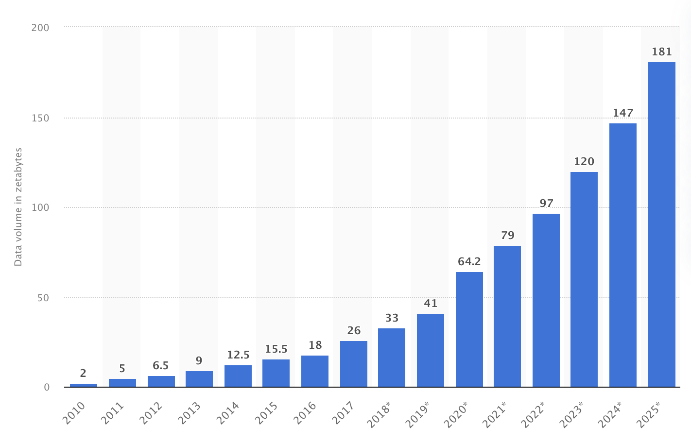
Future
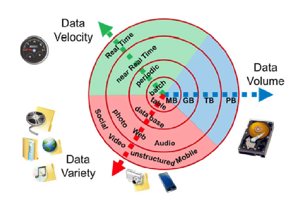
Issue
Data volume has exponentially increased in recent decades.
Wait but why?
Types
Definion
Speed at which data is being generated, collected, and processed.
Attributes
Evolution since 1950s
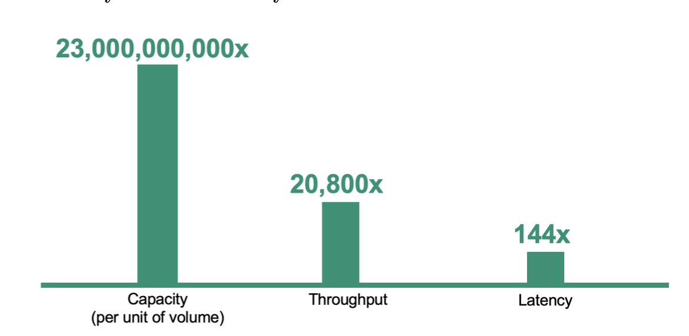
Definition
The trustworthiness and quality of data.
Definition
The usefulness extracted from data relative to the cost of storing and processing it.
Definition
How the meaning and format of data can shift over time or context.
Sometimes mentioned
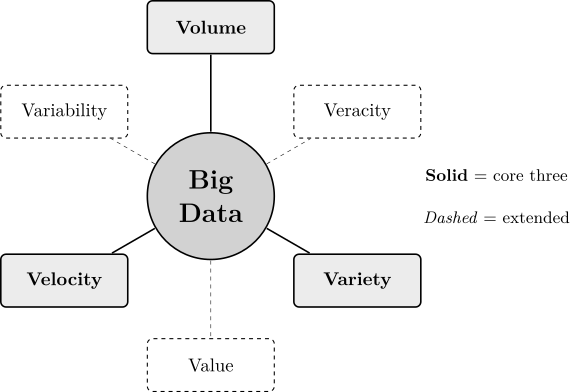
Features
Kleppmann’s definition
The system should continue to work correctly (performing the correct function at the desired level of performance) even in the face of adversity
Faults
Basically, theses are things that could go wrong.
Systems that can anticipate faults are called fault-tolerant or resilient.
Fault can be defined as one component of the system deviating from the spec.
Failures
Failures occur when system stops providing services to the user.
Faults might degenerate into failures.
Types of errors
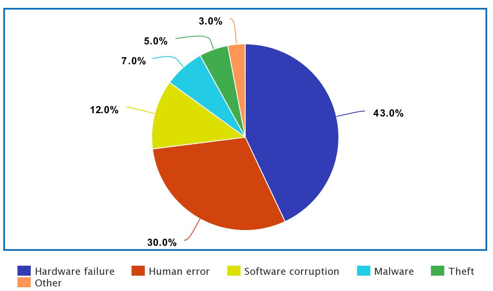
Kleppmann
As the system grows (in data volume, traffic volume, or complexity), there should be reasonable ways of dealing with that growth.
In other words, scalability is a system’s ability to cope with increased load.
What is load?
Load is described by load parameters. These might include:
Performance
Increasing load affects performance. There are several meanings to this term:
How to deal with load
Elasticity
An approach to load handling whereby a system automatically adds resources in case of load increase, and can decrease resources if load decreases.
Common wisdom
CAP theorem (Brewer, 2000; Gilbert & Lynch, 2002)
Given the following definitions:
the following holds:
A distributed system can provide at most two of the three properties at the same time – but only when a network partition is actually happening.
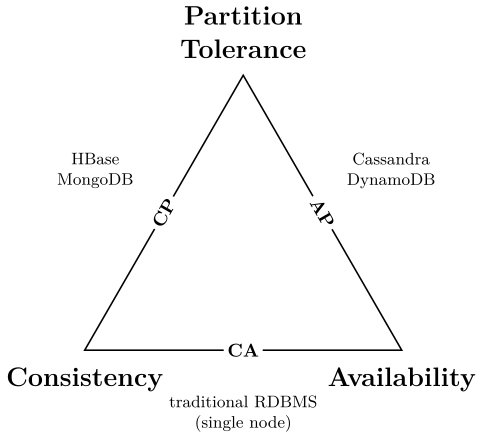
Kleppmann
Over time, many different people will work on the system
and they should all be able to work on it productively.
Principles
Operability
Complexity symptoms
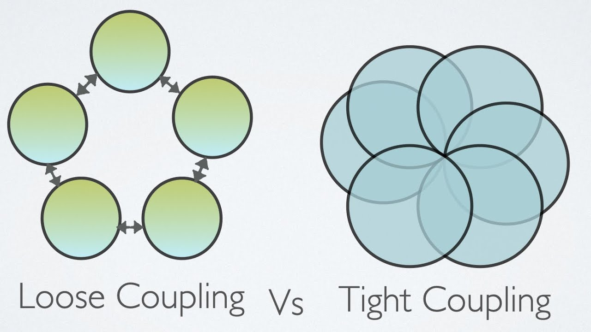
Philosophy of Software Design (Ousterhout)
The most fundamental problem in computer science is problem decomposition
the greatest limitation in writing software is our ability to understand the systems we are creating
Types
Incidental
Easy things can be complex. There can be complex constructs that are succinctly described, familiar, available and easy to use. That is incidental complexity.
Rich Hickey talk “Simple made easy”: https://www.youtube.com/watch?v=SxdOUGdseq4
However: Complexity is often caused by
Accidental complexity
Moseley and Marks define complexity as accidental if it is not inherent in the problem that the software solves (as seen by the users) but arises only from the implementation.
How to remove?
By providing proper abstractions.
Definition (Ousterhout)
An abstraction is a simplified view of an entity, which omits unimportant details.
In modular programming, each module provides an abstraction in the form of its interface.
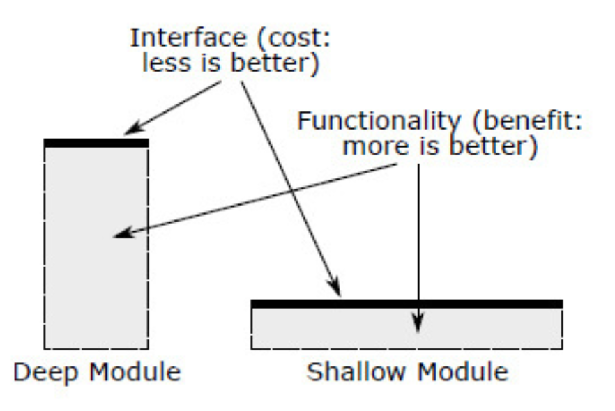
What can abstractions do?
Evolvability
One needs to adapt their big data system to possible future requirements changes.
However, keep in mind the following:
Types
Descriptive
Examples
Diagnostic
Examples
Predictive
Examples
Prescriptive
Examples
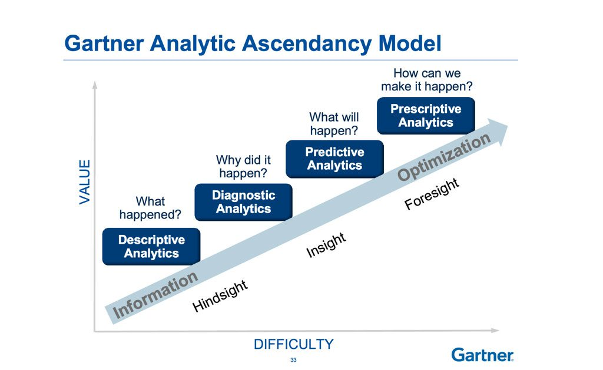
Definition
Processing a bounded, finite dataset as a single job.
Definition
Processing an unbounded sequence of events as they arrive.
| Aspect | Batch | Stream |
|---|---|---|
| Data | bounded | unbounded |
| Latency | high | low |
| Throughput | high | variable |
| Complexity | lower | higher |
| Typical use | reporting, training | monitoring, alerting |
Rule of thumb
Idea (Nathan Marz)
Run both a batch and a speed (stream) layer, then merge results in a serving layer:
The catch
Idea (Jay Kreps)
Treat everything as a stream, including historical data (replayed through the same pipeline).
Summary
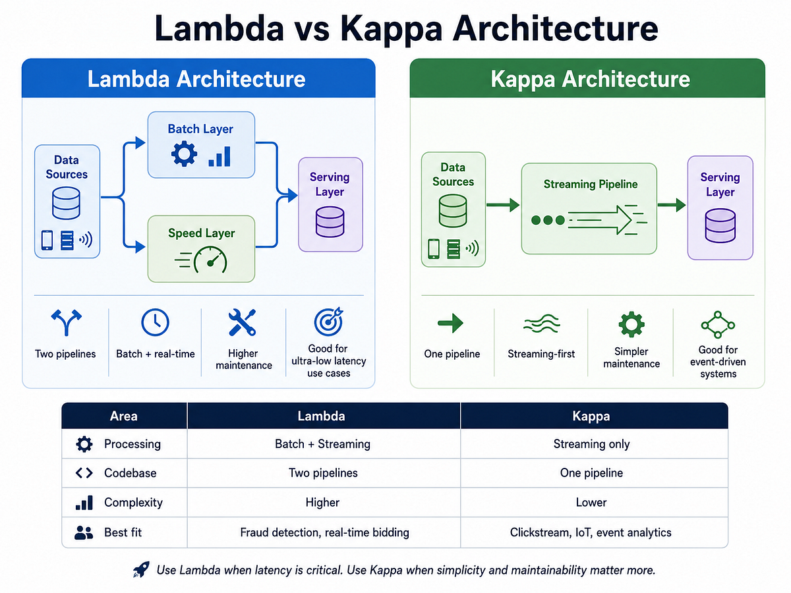
Challenges
What makes it hard?
What makes it hard?
What makes it hard?
What makes it hard?
What makes it hard?
What makes it hard?
Examples
Examples
Examples
Examples
Examples
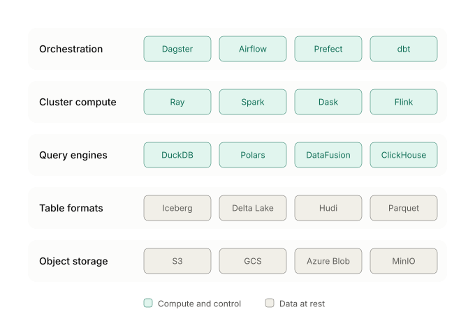
Categories
Row vs. column layout
A shared in-memory format
Arrow defines a columnar, in-memory layout that many tools agree on.
Why?
Pandas is single-threaded and loads everything into RAM. A newer generation of tools targets the same “fits on one machine, but not comfortably in pandas” gap:
Rust-powered dataframes
“SQLite for analytics”
More flavors of “faster than pandas”
Quick comparison
| Library | Execution | Scales beyond RAM? | Best for |
|---|---|---|---|
| Pandas | single-thread | no | small/medium data, ubiquity |
| Polars | multi-thread | partially | fast single-node analytics |
| DuckDB | multi-thread, SQL | partially (spills) | ad-hoc SQL over files |
| Dask | multi-thread/-process, distributed | yes | pandas-like API at cluster scale |
| cuDF | GPU | no | GPU-accelerated analytics |
The problem
A folder of Parquet files on cheap storage is fast and cheap – but has no transactions, no schema enforcement, and no easy way to update or delete rows.
The fix
Table formats – Apache Iceberg, Delta Lake, Apache Hudi – add a metadata layer on top of plain files to bring ACID transactions, schema evolution, and time travel to a data lake.
Putting it together
The result is called a lakehouse: warehouse-style guarantees on lake-style storage.
Reading it all back
The idea
Instead of hand-writing pipeline code, describe transformations as SQL select statements and let the tool compile them into a dependency-ordered set of queries run by your warehouse or engine.
Benefits
Fully managed alternatives
Who runs all this, and when?
Tools
Scaling training and inference
Core reading
Systems papers
Foundational theory
Further reading
Reports
Useful starting points
bigdata.qmd in this course for the full lecture/lab index.
Social media
Examples